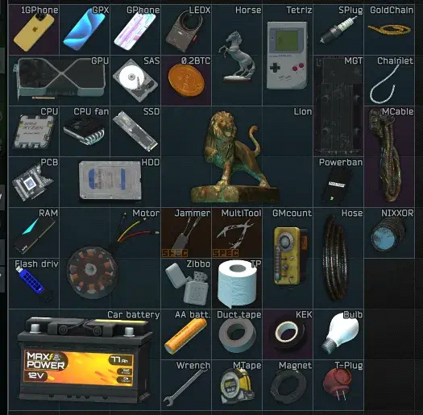

Tarkov HD Item Rework Project
- Downloads
- 25,361
- Favourites
- 16
- Mod lists
- 24
This is the start to my modding journey in SPT. Pls don’t hurt me
Preview:

Installation:

I started with the graphics card and have expanded from there. This doesn’t add any new items. Simply replaces the item with my asset instead.
I make each model have multiple LODs and optimize textures and materials to have it be as performant as possible. Of course this mod does still impact performance because it adds more data into each changed model. But I have done further optimizations for each so it should be as minimal as possible. Below shows a breakdown of the new multitool as an example of such optimizations.
I will continue to post updates and edit this mod as time goes on. Check the updates tab because I am going to keep this contained within the one mod as to not saturate the filebase with a million separate mods.
In game preview:
Feel free to post suggested items I should do next!
Currently I am working on:
Power cord
Ratchet
Raven
GreenBat
PSU
More…
CURRENT ROADMAP:
Get to 100 items.
Currently at: 43
If you find bugs then you’re probably playing Factorio. Otherwise if bits of my code are borked and not working let me know.
Special shout-out to EpicRangeTime helping me get down in the mud with unity and GroovyPenguinX and the team over at WTT for letting me use a little bit of their code. (the references folder) for 3.11 and earlier and Bushtail for assisting me with coding on the 4.0 release! You all are awesome!
The alternate Tetriz model was also provided by EpicRangeTime
If you like what I’m doing and would like to help me pay for some extra models it would really help this modder out. I do this for funzies so no sweat off this ducks back.
Version
0.43.5
Changed included folders to make installation easier.
Version
0.43.4
Rewrote the mod from scratch in C#. Updated to be compatible with SPT 4.0.1 More to come soon.
Version
0.43.1
Fixed some textures that were not loading correct. Validated functionality for 3.11.4
Version
0.43.0
Added:
T-Plug
Raven
OFZ
Updated support to 3.11
NOTE: Currently some items are bugged with the item preview window where they look slightly transparent. I am looking into this and will post an update when I have it resolved. I have also currently not optimized all of the textures so there may be a slight performance hit on this update but I will optimize this for the next release.
If there are any other bugs you discover with this release let me know!
This is also compatible with 3.10 just need to change the package.json to version ~3.10.